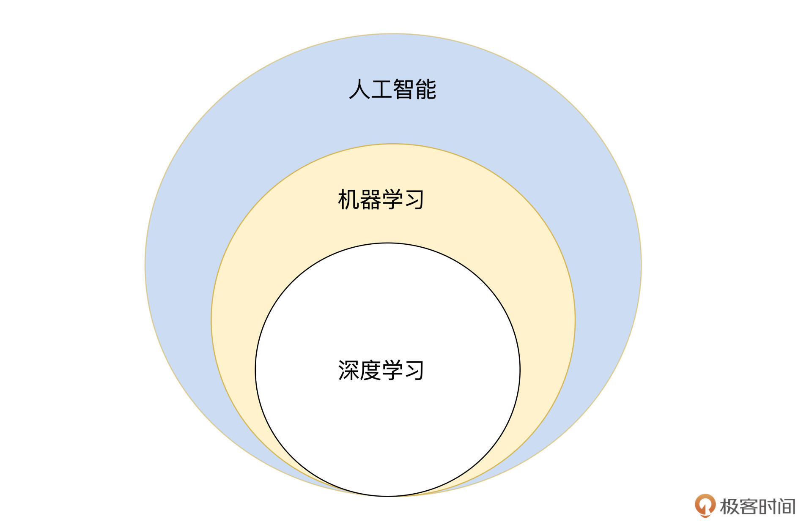
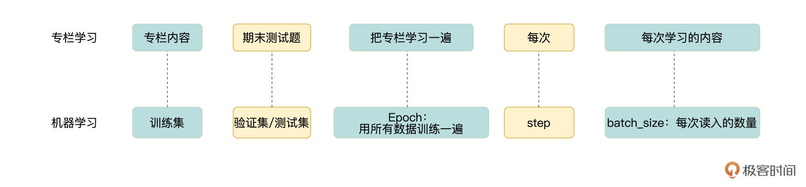

- 00 开篇词 如何高效入门PyTorch？.md.html
- 01 PyTorch：网红中的顶流明星.md.html
- 02 NumPy（上）：核心数据结构详解.md.html
- 03 NumPy（下）：深度学习中的常用操作.md.html
- 04 Tensor：PyTorch中最基础的计算单元.md.html
- 05 Tensor变形记：快速掌握Tensor切分、变形等方法.md.html
- 06 Torchvision（上）：数据读取，训练开始的第一步.md.html
- 07 Torchvision（中）：数据增强，让数据更加多样性.md.html
- 08 Torchvision（下）：其他有趣的功能.md.html
- 09 卷积（上）：如何用卷积为计算机“开天眼”？.md.html
- 10 卷积（下）：如何用卷积为计算机“开天眼”？.md.html
- 11 损失函数：如何帮助模型学会“自省”？.md.html
- 12 计算梯度：网络的前向与反向传播.md.html
- 13 优化方法：更新模型参数的方法.md.html
- 14 构建网络：一站式实现模型搭建与训练.md.html
- 15 可视化工具：如何实现训练的可视化监控？.md.html
- 16 分布式训练：如何加速你的模型训练？.md.html
- 17 图像分类（上）：图像分类原理与图像分类模型.md.html
- 18 图像分类（下）：如何构建一个图像分类模型_.md.html
- 19 图像分割（上）：详解图像分割原理与图像分割模型.md.html
- 20 图像分割（下）：如何构建一个图像分割模型？.md.html
- 21 NLP基础（上）：详解自然语言处理原理与常用算法.md.html
- 22 NLP基础（下）：详解语言模型与注意力机制.md.html
- 23 情感分析：如何使用LSTM进行情感分析？.md.html
- 24 文本分类：如何使用BERT构建文本分类模型？.md.html
- 25 摘要：如何快速实现自动文摘生成？.md.html
- 加餐 机器学习其实就那么几件事.md.html
- 用户故事 Tango：师傅领进门，修行在个人.md.html
- 答疑篇 思考题答案集锦.md.html
- 结束语 人生充满选择，选择与努力同样重要.md.html
- 捐赠
加餐 机器学习其实就那么几件事
你好，我是方远。
通过前面的学习，我们知道，PyTorch是作为一种机器学习或深度学习的实现工具出现的，因此学习PyTorch的时候，免不了会碰到一些机器学习中的相关概念和名词。
在专栏前期调研和上线之后，我收到了不少反馈、留言，希望可以在专栏里介绍一下机器学习的基本知识。
今天这次加餐，我们就一起来看看什么是机器学习，它是怎么分类的，都有哪些常见名词。在补充了这些基础知识之后，我还会和你聊聊模型训练的本质是什么，你可以把它当作专栏更新过半的期中总结。
好，让我们正式开始今天的学习。
人工智能、机器学习与深度学习
说到人工智能、机器学习还有深度学习这三个词，我们虽然很眼熟，但三者的关系总是理不清。
其实，这三者的关系是一种包含的关系。人工智能包含机器学习，而机器学习又包含深度学习。

人工智能的概念其实很早就有了，不过受到技术能力的限制，很少进入到人们的视线当中。当你在网络上搜索人工智能的概念时，可能每一条搜索结果都是用大段文字来解释。归根结底，人工智能的本质就是人们想让计算机像人一样思考，来帮助人们解决一些重复、繁重的工作。
人工智能的应用主要包括以下这几项：
- 专家系统
- 自然语言处理
- 计算机视觉
- 语音系统
- 机器人
- 其他
其中自然语言处理、计算机视觉与语音系统是现在大热的几个方向，从招聘信息中就可以看出来，例如去检索大厂的计算机视觉工程师、自然语言处理工程师等。这些领域中的问题，本质上都可以用传统的机器学习来解决，但依然是受到技术能力的限制，一直处于瓶颈。
近十年，随着深度学习的发展，人们在这三个领域的研究中取得了长足的进步。越来越多的人工智能产品得以落地，让我们的生活变得更加便利、快捷。我们专栏所讲的PyTorch也活跃于这些领域当中。
机器学习（深度学习）
深度学习起源于机器学习中的人工神经网络，所以从工作机制上讲机器学习与深度学习是完全一致的，接下来我们就看看什么是机器学习与深度学习的分类与工作流程。（下文简称机器学习，省略深度学习）。
正如前文所说，机器学习的目的是让机器能够像人一样思考。那么我们可以先想想看，人类是根据什么来思考问题的呢？很显然，我们思考问题时，通常会根据以往的一些经验对当前的问题作出判断。
与人类归纳总结经验的过程类似，机器学习的主要目的是把人类归纳经验的过程，转化为由计算机自己来归纳总结的过程。
其中，人类积累的历史经验，在机器学习中体现为大量的数据。
比如在图像分类的过程中我们给计算机提供了大量的图片，总结归纳这个过程，就是机器学习的训练过程，即计算机处理图片并“学习”其中潜在特征的过程。最终的“规律”，则体现为机器学习中的模型，模型也是我们机器学习任务中最终的一个产出。
所以说，机器学习是一种通过利用数据，训练出模型，然后使用模型预测的一种方法。
有监督学习 Vs 无监督学习
刚才我们说到，机器学习需要训练出模型。机器学习中的模型基本上可以分为有监督学习与无监督学习两大类，当然，基于这两大分类，下面还有很多小的细分类别，我们先不做讨论。
这里我们先弄清楚，什么是有监督学习与无监督学习呢？
有监督学习与无监督学习最明显的区别就是，在训练的时候是否会使用数据真实的标签。为了让你快速理解，这里我结合一个人脸识别的例子来解释一下。
首先来看有监督学习，我们现在要训练一个人脸识别模型，来自动识别人脸是A还是B。那么，在训练的时候就要给模型看大量标记为A的A照片以及标记为B的B照片，让模型学习谁是A，谁是B。只有经过这样的训练之后，当我们进行预测的时候，模型才能正确判断出这张人脸图片是A还是B。
再来说说无监督学习，我们手机的相册中有这样的功能，它能自动把某一个人的照片汇聚在一起，但其实手机并不知道汇集到一起的照片是谁。这背后的模型训练原理是怎样的呢？其实训练的时候是把一堆图片给模型看，但是模型并不知道这些图片真实对应的标签，而是模型自己探索这些图片中的潜在特征。
大多数我们可以体验到的深度学习应用，都属于有监督学习，例如人脸识别、图像分类、手势识别、人像分割、情感分析等。而最近几年特别流行的GAN就属于无监督学习。
常见名词讲解
我们在专栏中出现了很多专业的术语，在这里我们就一起汇总一下，解释一下都是什么意思。为了不让你觉得这部分像教科书那样照本宣科，所以我决定用一个例子把这些名词给串联起来。
我们就像开篇所说的那样，机器学习的本质就是让机器像人一样的思考，所以，我就用学习这个专栏的过程来解释机器学习中的一些术语。
训练集与验证集
在训练时使用的数据我们称之为训练集。评估模型时使用的数据称之为评估集、验证集或测试集。
通过这个专栏的学习，会让你从无到有地掌握有关PyTorch的知识，在专栏结束的时候，我们还设置了期末测试题，用来帮助你衡量一下自己的学习成果。
那么，这个专栏的内容就相当于训练集，测试题就是验证集（或称测试集）。训练集是用来训练模型的，而验证集是用来评估模型的。
在模型训练的时候，要注意训练集与验证集一定是来自同一问题的不同数据。就像专栏学习的是PyTorch，但是后面是Python的测试题，那显然不能反映出你真实的学习成果。
Epoch与Step
用所有数据训练一遍就是一个Epoch，也就是把专栏学习一遍就叫做一个Epoch。
但受到硬件设备的限制，训练时不会一次性的读入所有数据，而是一次读入一部分进行训练，就像我们每周一、三、五更新一篇内容，然后你相应的去学习一部分内容一样。这里的“每次”就是对应的Step这个概念。那每次读入的数据量就是batch_size。

模型训练本质
刚才我们通过一个例子理顺了不少机器学习的关键名词。其实专栏更新到现在，我们已经讲完了使用PyTorch做模型训练的大部分内容了，恭喜你坚持到这里。
其实我刚开始接触机器学习的时候，总是被它的那些算法弄得晕头转向，有一个阶段一直是摸不清头脑的迷茫状态。有的算法即使看明白了，我也不知道该如何使用。
所幸坚持学习了一段时间后，我慢慢发现，机器学习其实就那么几件事，可谓万变不离其宗。接下来让我们一起回顾一下机器学习乃至深度学习开发的几个重要环节。
首先看看机器学习开发的几个步骤，这我在之前的专栏也有提及，记不清的部分你可以温习回顾。
1.数据处理：主要包括数据清理、数据预处理、数据增强等。总之，就是构建让模型使用的训练集与验证集。- 2.模型训练：确定网络结构，确定损失函数与设置优化方法。- 3.模型评估：使用各种评估指标来评估模型的好坏。
你现在可以想想，基本没有项目的开发能离开这三步吧。无论是深度学习中的深度模型还是机器学习中的浅层模型，它们的开发基本都离不开这三步。
然后，我们再来看看其中的模型训练部分。各种模型纵有千万种变化，但是依然离不开以下几步：
1.模型结构设计：例如，机器学习中回归算法、SVM等，深度学习中的VGG、ResNet、SENet等各种网络结构，再或者你自己设计的自定义模型结构。- 2.给定损失函数：损失函数衡量的是当前模型预测结果与真实标签之间的差距。- 3.给定优化方法：与损失函数搭配，更新模型中的参数。
你现在再想想，是不是基本所有模型的训练都离不开这三步呢？其实上面讲的这6点，都来源于咱们前面讲过的内容。学习前面的内容就好比学会如何制造汽车的零部件，将这些零件组装起来就是完成了一辆汽车的完整生产，而这一步是我们后面要继续研究的。
这里面变化最多的就是模型结构了，这一点除了多读读论文，看看相关博客来扩充知识面之外，没有什么捷径可走。然后呢，我们也不要小瞧了损失函数，不同的损失函数有不同的侧重点，当你模型训练处于瓶颈很难提升，或者解决不了现有问题的话，可以考虑考虑调整一下损失函数。
在我看来，模型训练的本质就是确定网络结构、设定损失函数与优化方法。接下来，我们将一起学习如何将前面学习的各个环节组装起来，完成一个完整的模型训练。
欢迎你在留言区跟我交流讨论，咱们一起继续加油。
© 2019 - 2023 Liangliang Lee. Powered by gin and hexo-theme-book.